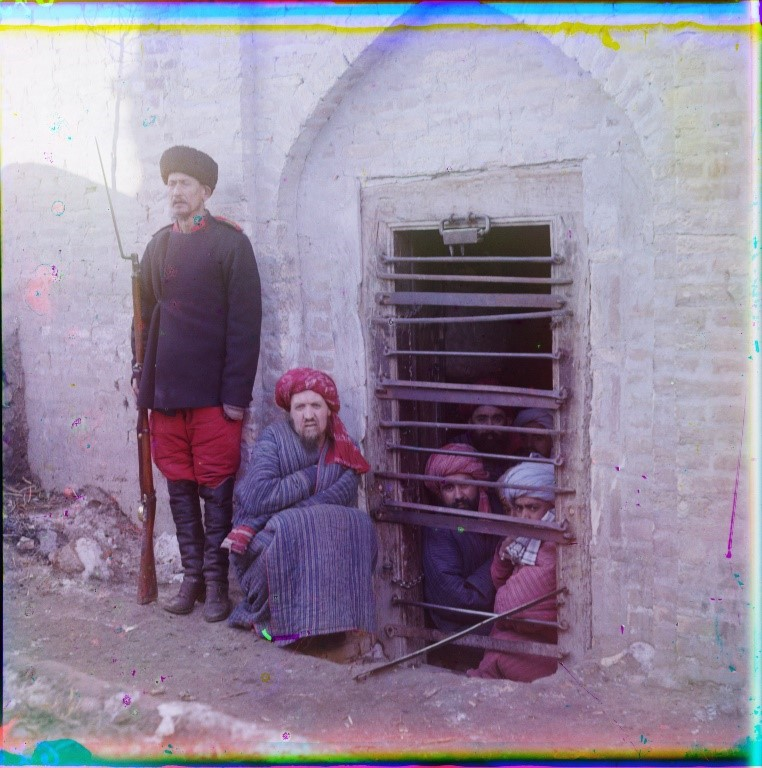
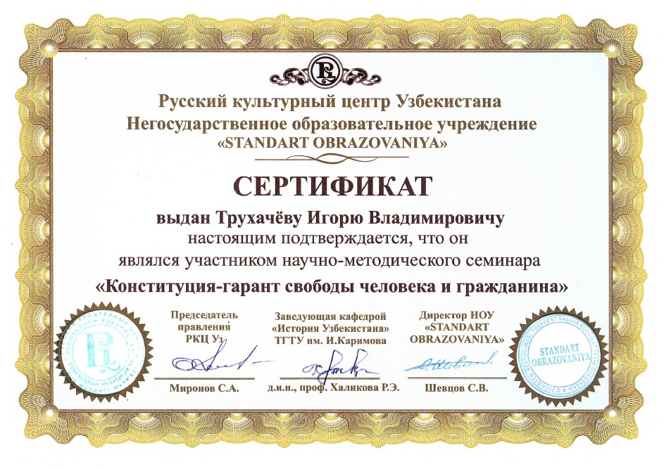
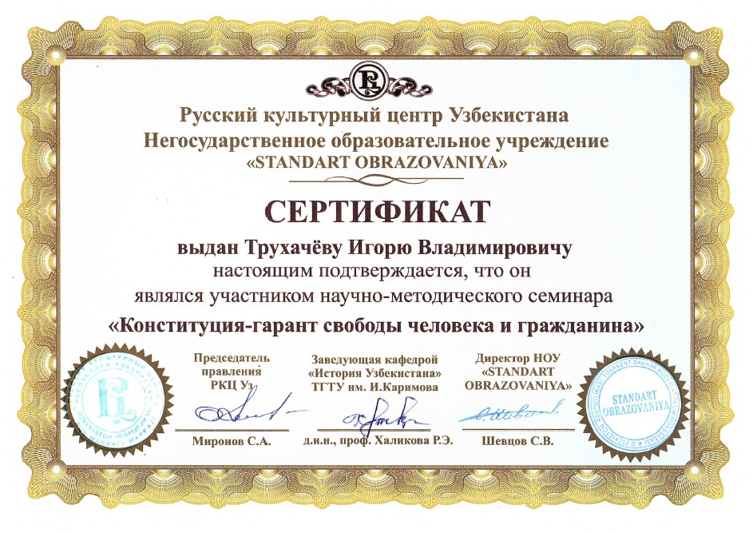

Имя этого человека до недавних пор было известно разве что узкому кругу людей, интересовавшихся фотографическим делом. Но в 2021 году вышел фундаментальный труд, посвященный С.М.Прокудину-Горскому с несколькими сотнями фотографий, запечатлевших разные стороны быта, культуры, архитектуры нашего края в начале ХХ века . Эта книга вышла в рамках проекта «Культурное наследие Узбекистана в собраниях мира».
На фотографиях запечатлены лица наших далеких предков, потомки которых, возможно, живы и сегодня. Эти фотографии – ценный материальный источник для историков, тех, кто изучает историю в школах или в высших образовательных учреждениях Узбекистана. Фотоснимки позволяют войти в то далекое временно́е пространство, стать пусть мысленно свидетелями и участниками событий уже давно минувших времен.
Сергей Михайлович Прокудин-Горский – русский фотограф, химик, ученик Д.И.Менделеева. Внес значительный вклад в развитие фотографии и кинематографии. Он первым в России начал делать цветные фотографии. Создал «Коллекцию фотопримечательностей Российской империи», куда вошли фотографии многих памятников архитектуры, пейзажей, жителей Туркестана и Бухарского эмирата.
Впервые в наших краях фотограф побывал в 1906-1907 годах, сделал много цветных снимков в Самарканде и Бухаре. Затем он посетил он посетил наши края в 1911 и 1912 годах. Именно в Самарканде С.М.Прокудин-Горский испытал изобретенный им киноаппарат для цветной киносъемки. Следует отметить, что поездки фотографа в наши края происходили в очень непростое время. Если в странах Западной Европы господствующей была индустриальная модель развития, основанная на фабрично-заводском производстве, использовании машинной техники, то в Туркестане, Бухарском эмирате сохранялось традиционное аграрное производство. Причем земледелие находилось в бедственном положении и площадь орошаемых земель сокращалась, что вело к низкому уровню жизни. К этому историк А.Эркаев добавляет войны, грабежи, социально-экономическую нестабильность . Все перечисленное нашло отражение в фотографических материалах С.М.Прокудина-Горского.
В этих условиях возникла потребность в модернизации общества, приобщения среднеазиатских народов к достижениям мировой цивилизации. Эту цель и поставили перед собой джадиды. Ее ярко обозначил в своем исследовании С.Агзамходжаев: «Будучи людьми с чутким сердцем и просвещенным умом, инициаторы движения с глубокой болью воспринимали исторический тупик, в котором оказались к тому времени их народы. Беспросветная нищета широких масс…, угрожающее отставание от экономически развитых стран мира, культурный регресс, застой мысли побуждал их искать действенные средства ускорения общественного прогресса» .
Но у этих людей существовала мощная преграда – это абсолютно закостеневшая власть правящей элиты – ханов, эмиров, их чиновников. Они были категорическими противниками любых новшеств, всячески защищали старый образ жизни.
Вот перед нами портрет последнего эмира Бухары Сеида Алим-хана (снимок 1911 года). Он только недавно взошел на трон. Внешне добродушный, еще молодой человек. Одет в богатый халат, на нем погоны генерал-майора русской армии. Высшие ордена Российской империи.
Эмир входил в свиту императора Николая II. Был ярым противником каких-то ни было реформ, подвергал репрессиям джадидов-младобухарцев.
Фотограф зафиксировал и облик правителя Хивинского ханства Асфендиярхана, когда тот был в Санкт-Петербурге в 1912 году. Он в богатом халате, в генеральских погонах. На груди – ордена Российской империи. Он два года как на троне. Его жизнь и карьера закончатся через 6 лет, когда он будет убит в результате заговора. Он также был противником каких-либо реформ в своем государстве.
До нас также дошли фотографии ханских и эмирских чиновников разного ранга. Например, бросается в глаза яркая одежда, дорогая сабля верховного кушбеги Бухарского эмирата Мирзы Насруллы.
Фотограф зафиксировал большое количество простых жителей Бухары, Самарканда. Отражением быта, его своеобразия является фотография водоноса у мавзолея Биби-Ханым.
Фотограф зафиксировал большое количество простых жителей Бухары, Самарканда. Отражением быта, его своеобразия является фотография водоноса у мавзолея Биби-Ханым.
Жуткое впечатление производят скованные цепями узники в легкой одежде на фоне снега. Не менее впечатляет фотография заключенных в бухарской тюрьме.

Интересна фотография лекарей на самаркандском Регистане. Они разложили какие-то снадобья и амулеты на циновку прямо на земле. Это свидетельство крайне примитивной медицины, когда пациентов лечили нашептыванием, ношением амулетов, бумажками с написанными молитвами .
С.М.Прокудин-Горский сделал много фотографий людей разных этнических групп, населявших Туркестан, Бухарский эмират. На нас с фотографий смотрят узбеки, киргизы-кипчаки, татары, уйгуры, дунгане, бухарские евреи, таджики. Все они сохраняли своеобразные черты быта, культуры, языка, унаследованные от своих древних или средневековых предков. Интересны в этой связи портреты аксакала из Самарканда, киргизской семьи переселенцев. Зафиксированы и образы первых русских переселенцев.
Особый интерес вызывают фотографии архитектурных памятников. Современный турист или житель Узбекистана, любуясь многовековыми, всемирно известными памятниками архитектуры и не подозревают в каком состоянии они были во времена С.М.Прокудина-Горского, но которые мы можем посмотреть сегодня на его фотографиях. Еще Ф.Беневени, русский дипломат, побывавший в начале XVIII века в наших краях, отметил разрушающиеся памятники архитектуры. Что-то было восстановлено правителем Самарканда Шахмурадом, ставшим в 1785 году эмиром. Он за 2-3 года возродил запустевшие в годы междоусобиц медресе Бухары и Самарканда. Например, были отремонтированы, восстановлены или перестроены самаркандское медресе Ходжи Ахрара, медресе Шейбани-хана, Улугбека и другие. Некоторые из этих памятников, опять в запущенном состоянии, фотографировал С.М.Прокудин-Горский, но уже начале ХХ века.
Представляя свои самаркандские работы на I Всероссийском съезде художников, фотограф писал: «Общий вид мечети Биби-Ханым. Это одно из грустнейших явлений Самарканда. Купола почти нет. Остался маленький кусок с колоссальными трещинами… Нужно удивляться, как, не охраняют проход внутри мечети. Там опасно ходить. Это одна из самых интереснейших мечетей. Она была построена Тамерланом в память его покойной жены» .
А вот его слова об еще одном бесценном архитектурном ансамбле: «Мечеть Шах Зинде… От нее что-нибудь останется, потому что там сидят муллы, которые клянчат деньги за показ. В общем надзор крайне мерзкий за этими замечательными девятивековыми памятниками. Не организовано ничего. Ремонта нет, никто не заботится, ничего не интересует» .
На фотографиях сильно обветшалым предстает и медресе Улугбека, построенное еще в 1420 году. Со временем рядом с ним были возведены медресе Тилля-Кори и Шер-Дор, образовавшие знаменитый Регистан. Бросается в глаза, что один из минаретов медресе Улугбека опасно наклонился, что грозило его падением. Только в 1932 году архитектором В.Г.Шуховым была проведена уникальная операция по выпрямлению минарета, который прекрасно смотрится сегодня.
Здесь добавим, что в настоящее время, в условиях независимости эти архитектурные комплексы, как и другие отреставрированы и выглядят еще величественнее и красивее, чем на фотографиях С.М.Прокудина-Горского.
Сегодня также интерес вызывают и многие другие фотографии. Например, вид на Самрканд с медресе Тилля-Кори, узкая улочка, Бухары где и до сегодня находится мечеть Чор-Минор, продавцы разных товаров от лепешек до тканей разных расцветок.
Хотелось бы выделить еще один блок фотографий, на которых отображены новейшие по тем временам ирригационные сооружения. Они особенно интенсивно строились на рубеже XIX-XX веков. Это позволило оросить большой массив земель, резко увеличить производство хлопка – в 4 раза за период с 1894 по 1911 годы. Также началось возделывание и новых для наших краев сельскохозяйственных культур: ржи, овса, кукурузы, картофеля, помидор, сахарной свеклы.
Новые каналы, плотины, мосты особенно интенсивно строились в бассейне реки Сыр-Дарья, что позволило оросить большие площади Голодной степи. Этот район и ныне является одним из основных в производстве хлопка, иных сельскохозяйственных культур. На фотографиях эти объекты названы Русалка, Царевна, Царь-плотина, Княжеский мост и так далее. Многие из этих сооружений построены на средства Великого князя Николая Константиновича, племянника императора Александра II. Великий князь находился в ссылке в Туркестане, занимался огромной благотворительной деятельностью. Действуют эти ирригационные сооружения до сегодня, будучи отреставрированы по современным технологиям.
В книге, название которой приведено в начале статьи, представлено, как уже отмечалось, много сотен фотографий. Лишь небольшое их количество упомянуто в этой статье. Эти фотографии заинтересуют всех, кому небезразлична история родной страны. Их можно использовать в учебном процессе, формируя и у студентов и школьников образное восприятие прошлого, на основе которого формировалось будущее.


 
